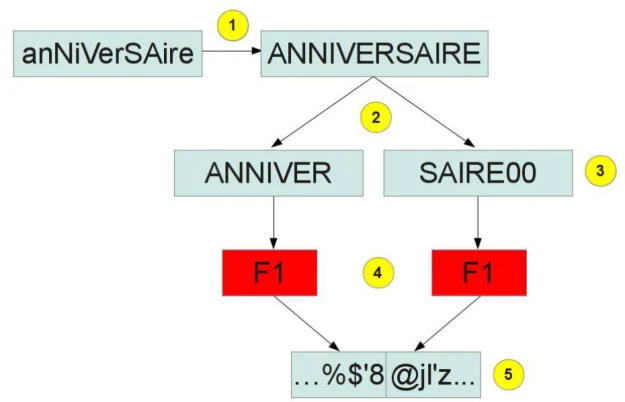
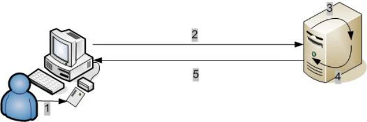

TP — MSP Systèmes clients¶
La transcription du support Drive et l’aide pédagogique sont séparées pour rendre leur provenance explicite.
SOURCE DRIVE · TRANSCRIPTION DU SUPPORT
Le contenu des documents du dossier TSSR est transcrit ci-dessous, page par page. Les textes et tableaux sont intégrés à la page Web. Aucun fichier PDF, aucune diapositive entière ni aucune reproduction de page n’est affiché. Seuls des croquis ou visuels isolés et vérifiés peuvent accompagner la transcription. Les versions et les consignes restent celles des supports de formation. Les compléments IA sont conservés dans leur onglet distinct.
Support · NP_MDP_NoteTech · 11 pages transcrites
Les valeurs d’accès présentes dans les documents sont neutralisées par « fourni par le formateur ». Les adresses personnelles utilisent le domaine example.com. Le rôle des champs et la structure des exemples sont conservés ; aucun fichier source du Drive n’a été modifié. Note historique du 5 juin 2012 ; ses recommandations ne sont pas présentées comme une politique de sécurité actuelle.
Recommandations de sécurité relatives aux mots de passe
Note technique DAT-NT-001/ANSSI/SDE/NP, version 1.1 du 5 juin 2012. Le document annonce 10 pages hors couverture. Cette transcription conserve les recommandations historiques du document fourni.
Informations
Personnes ayant contribué à la rédaction de ce document :
| Contributeurs | Rédigé par | Approuvé par | Date |
|---|---|---|---|
| Division assistance technique, CERT Fr | DAT | SDE | 5 juin 2012 |
Évolutions du document :
| Version | Date | Nature des modifications |
|---|---|---|
| 1.0 | 23 mai 2012 | Version initiale |
| 1.1 | 5 juin 2012 | Corrections de forme |
Pour toute remarque :
| Contact | Adresse | @mél | Téléphone |
|---|---|---|---|
| Bureau Communication de l’ANSSI | 51 bd de La Tour-Maubourg 75700 Paris Cedex 07 SP | communication@ssi.gouv.fr | 01 71 75 84 04 |
Préambule
Malgré le développement de mécanismes d’authentification intrinsèquement plus robustes, l’usage des mots de passe est encore relativement répandu, notamment pour l’authentification sur Internet.
L’ANSSI recommande très fortement, dans tous les cas où cela est possible, l’utilisation de technologies d’authentification forte (utilisation de certificats d’authentification sur carte à puce, utilisation de schéma d’authentification à plusieurs facteurs etc.). Cependant, l’utilisateur n’est pas toujours maître des choix qui s’offrent à lui en matière d’authentification. L’objet de ce document est donc de guider l’utilisateur dans le choix de mots de passe adéquats.
De quoi dépend la robustesse d’un mot de passe ?
Les préconisations que l’on peut retrouver dans les guides de bonne pratique en matière de robustesse de mots de passe sont parfois contradictoires. Certaines recommandations préconisent le choix de mots de passe de 12 caractères alphanumériques, d’autres de 16 lettres, etc.
En réalité, il n’existe pas de règle universelle. La robustesse d’un mot de passe dépend en pratique :
- de la force intrinsèque du mot de passe, c’est à dire sa complexité intrinsèque 1 ;
- du mécanisme mis en oeuvre pour vérifier le mot de passe et de ses caractéristiques techniques
(temps de vérification, mécanisme cryptographique sous-jacent notamment) ;
- du modèle d’attaquant considéré. La résistance contre tous les types d’attaquants imaginables est intrinsèquement plus difficile à atteindre que la simple résistance aux attaques opportunistes par lesquelles l’attaquant va essayer les mots de passe les plus triviaux les uns après les autres sans connaissance a priori du système cible ;
- éventuellement, en fonction des mécanismes techniques mis en oeuvre et du modèle d’attaquant, du nombre d’authentification ratées autorisées avant blocage d’un compte protégé par le mot de passe ;
- des mécanismes d’alerte éventuels. Certains systèmes permettent à l’utilisateur de prendre connaissance de manière sûre du nombre d’échecs d’authentification infructueux. D’autres léveront une alerte à destination d’un administrateur ou bloqueront le compte de l’utilisateur concerné.
Compte-tenu de ce qui précède, il n’existe pas de recette miracle pour déterminer à coup sûr ce qu’est un bon mot de passe. Prenons quelques exemples plus concrets :
Exemple 1 : Certains systèmes d’authentification historiques découpaient systématiquement tous les mots de passe de moins de 14 caractères en deux blocs de 7 caractères, sur lesquels étaient appliqués un mécanisme de vérification similaire. Sans rentrer dans les détails techniques, le choix d’un tel mécanisme avait pour conséquence le fait que tous les mots de passe de moins de 14 caractères étaient à peu de chose près équivalents en termes de robustesse. Choisir un mot de passe de 14 caractères n’était pas réellement plus sûr que de prendre un mot de passe de 8 caractères (cf. Annexe).
Exemple 2 : Certains systèmes d’authentification disposent d’un mécanisme doublant le temps de vérification du mot de passe après chaque échec d’authentification. Ainsi, le temps de vérification du mot de passe devient rédhibitoire pour un attaquant après seulement quelques essais infructueux. Cette mesure est efficace, mais uniquement contre un attaquant de niveau basique essayant tous les mots de passe les plus probables les uns après les autres. Il n’est pas rare que l’observation des échanges
- Voir sur le site www.securite-informatique.gouv.fr les fiches techniques "Mot de passe" et "Calculer la force d’un mot de passe".
entre l’utilisateur et la machine sur laquelle il cherche à s’authentifier fournisse suffisamment d’information à l’attaquant pour rechercher le bon mot de passe a posteriori (on parle de recherche hors-ligne).
Exemple 3 : Certains systèmes d’information imposent à l’utilisateur de prendre un mot de passe extrêmement compliqué mais le transmettent ensuite en clair sur le réseau. La complexité du mot de passe choisi sur l’utilisateur n’a donc qu’un impact limité sur la sécurité du système dans son ensemble, dès lors que l’attaquant a la possibilité d’écouter le échanges sur le réseau.
Au final, la définition d’une politique de mot de passe est une opération complexe. Cette politique doit être ajustée le plus précisément possible afin de garantir le respect des objectifs de sécurité sans imposer des contraintes irréalistes pour les utilisateurs.
Les recommandations minimales à respecter !
A minima, l’ANSSI estime que les 8 recommandations suivantes doivent s’appliquer indépendamment de tout contexte. Lorsque les systèmes d’information utilisés le permettent, certaines doivent être imposées techniquement.
Pour en savoir plus
Pour approfondir les méthodes d’attaque sur mots de passe et disposer ainsi de plus d’éléments justifiant ces recommandations, le lecteur est invité à lire l’annexe de ce document qui est une mise à jour d’une note d’information publiée en 2005 par le CERTA 2.
| Référence | Recommandation du document de 2012 |
|---|---|
| R1 | Utilisez des mots de passe différents pour vous authentifier auprès de systèmes distincts. En particulier, l’utilisation d’un même mot de passe pour sa messagerie professionnelle et pour sa messagerie personnelle est à proscrire impérativement. |
| R2 | Choisissez un mot de passe qui n’est pas lié à votre identité (mot de passe composé d’un nom de société, d’une date de naissance, etc.). |
| R3 | Ne demandez jamais à un tiers de créer pour vous un mot de passe. |
| R4 | Modifiez systématiquement et au plus tôt les mots de passe par défaut lorsque les systèmes en contiennent. |
| R5 | Renouvelez vos mots de passe avec une fréquence raisonnable. Tous les 90 jours est un bon compromis pour les systèmes contenant des données sensibles. |
| R6 | Ne stockez pas les mots de passe dans un fichier sur un poste informatique particulièrement exposé au risque (exemple : en ligne sur internet), encore moins sur un papier facilement accessible. |
| R7 | Ne vous envoyez pas vos propres mots de passe sur votre messagerie personnelle. |
| R8 | Configurez les logiciels, y compris votre navigateur web, pour qu’ils ne se "souviennent" pas des mots de passe choisis. |
- CERTA-2005-INF-001.
Annexe à la note DAT-NT-001/ANSSI/SDE du 5 juin 2012
- 1 Introduction
- 2 Les différentes attaques sur les mots de passe
- 2.1 Attaques par force brute
- 2.2 Attaques par dictionnaires
- 2.3 Attaques par compromis temps/mémoire
- 2.4 Attaques indirectes
- 3 Comment créer un bon mot de passe ?
- 3.1 Méthode phonétique
- 3.2 Méthode des premières lettres
- 4 Pourquoi et comment bien gérer les mots de passe ?
- 4.1 Politique de gestion des mots de passe
- 4.1.1 Sensibilisation à l’utilisation de mots de passe forts
- 4.1.2 Mot de passe initial
- 4.1.3 Renouvellement des mots de passe
- 4.1.4 Les critères prédéfinis pour les mots de passe
- 4.1.5 Confidentialité du mot de passe
- 4.1.6 Configuration des logiciels
- 4.2 Utilisation de mots de passe différents
- 4.3 Utilisation de mots de passe non rejouables (One Time Password)
- 4.4 Mettre en place un contrôle systématique des mots de passe
- 5 Lorsque possible, préférer l’usage de certificats d’authentification sur carte à puce !
1 Introduction
L’utilisation de mots de passe forts est l’une des briques de base dans la sécurisation d’un système d’information. Malheureusement cette première étape est souvent absente dans la politique de sécurité. Il est par conséquent assez fréquent de trouver des comptes avec des mots de passe triviaux, sans mot de passe ou avec des mots de passe par défaut.
Cette note a pour but :
- de sensibiliser les utilisateurs de système d’information sur l’intérêt d’avoir des mots de passe forts ;
- de sensibiliser les administrateurs sur l’intérêt de mettre en place un contrôle systématique de la qualité des mots de passe ;
- de sensibiliser les concepteurs d’application sur l’importance d’une politique complète et cohérente concernant l’utilisation et la gestion des mots de passe ;
- de préciser les limites de la sécurité apportée par les mots de passe.
2 Les différentes attaques sur les mots de passe
Afin d’éviter qu’un mot de passe ne soit facilement retrouvé par un outil conçu à cet effet, il peut être intéressant de connaître les différentes méthodes utilisées par les outils automatisés pour découvrir les mots de passe. Dans la plupart des cas, ce sont les empreintes (valeur de sortie d’une fonction de hachage) des mots de passe qui sont stockées sur le système. Les attaques sur les mots de passe consistent donc à calculer des empreintes et à les comparer à celles contenues dans les fichiers de mots de passe.
En outre, toute faiblesse dans les schémas de mot de passe peut faciliter ces attaques. Il convient donc d’en tenir compte pour choisir le bon mot de passe. Par exemple, pour les systèmes Microsoft, lorsque le Hash LM est utilisé, si un attaquant a récupéré le hash du mot de passe, il pourra récupérer le mot de passe originel en un temps très raisonnable à l’aide, par exemple, des Rainbow Tables. En effet, dans ce mode, il n’y a pas de différences entre les minuscules et les majuscules et la complexité ne peut pas dépasser 7 caractères par construction. Aussi, dans les paramètres de sécurité locaux Windows, il convient d’empêcher le stockage Hash LM après changement de mot de passe. Le schéma qui suit illustre le principe de fonctionnement du Hash LM :
Figure 1 – Description du Hash LM


- La casse du mot de passe n’est pas gérée. Il peut donc être considéré que tout est en majuscules.
- Le mot de passe est séparé en 2 mots de 7 caractères.
- Lorsque le mote de passe a une longueur inférieure à 14 caractères, il est complété par des caractères null.
- Une fonction de hashage est appliquée à chaque mot.
- Les deux hashs concaténés constituent le Hash LM.
2.1 Attaques par force brute
Cette attaque consiste à tester toutes les combinaisons possibles d’un mot de passe. Plus il existe de combinaisons possibles pour former un mot de passe, plus le temps moyen nécessaire pour retrouver ce mot de passe sera long.
Un mot de passe, d’une longueur minimale de douze caractères et constitué d’au moins trois des quatre groupes de caractères enoncés ci-dessus (minuscules, majuscules, caractères spéciaux et chiffres), ne pourra pas en général être découvert par cette attaque dans un temps raisonnable 3.
2.2 Attaques par dictionnaires
Cette attaque consiste à tester une série de mots issus d’un dictionnaire. Il existe toutes sortes de dictionnaires disponibles sur l’Internet pouvant être utilisés pour cette attaque (dictionnaire des prénoms, dictionnaire des noms d’auteurs, dictionnaire des marques commerciales...). En utilisant un mot de passe n’ayant aucune signification cette attaque ne donnera aucun résultat.
Cependant, plusieurs règles de transformation des mots du dictionnaire sont utilisées par les outils automatisés pour augmenter le nombre de combinaisons possibles. Citons par exemple :
- le remplacement d’un ou de plusieurs caractères du mot du dictionnaire par une majuscule
(bUreAU) ;
- le remplacement de certains caractères par des chiffres comme par exemple le S en 5 (mai5on) ;
- l’ajout d’un chiffre au début ou à la fin d’un mot (arbre9) ;
- l’ajout des mots de passe déjà découverts.
Il est possible d’utiliser des dictionnaires contenant une liste de mots de passe et leur empreinte associée établie selon ces règles. Même si cette possibilité accélère le temps nécessaire pour retrouver un mot de passe, elle nécessite plus de moyens comme une place plus importante en mémoire.
La solution idéale pour un individu malintentionné qui souhaiterait retrouver des mots de passe le plus rapidement possible serait d’avoir une liste exhaustive de tous les mots de passe possibles et de leur empreinte associée. Un tel dictionnaire n’est pas enviseageable car il nécessiterait une place en mémoire bien trop importante. Cependant sur les algorithmes de chiffrement faibles (cf. exemple précédent du Hash LM sur les systèmes Microsoft Windows), il est possible d’utiliser les attaques par compromis temps/mémoire.
2.3 Attaques par compromis temps/mémoire
Les attaques par compromis temps/mémoire sont des solutions intermédiaires permettant de retrouver un mot de passe plus rapidement qu’avec une attaque par force brute et avec moins de mémoire
- Compte tenu des moyens à la disposition de tout à chacun au moment de la rédaction de ce document.
qu’en utilisant une attaque par dictionnaire. Ces compromis sont réalisés à partir de chaînes construites à l’aide de fonctions de hachage et de fonctions de réduction. Pour retrouver un mot de passe, il faudra d’abord retrouver à quelle chaîne appartient l’empreinte recherchée. Une fois que la chaîne aura été retrouvée il sera alors facile de retrouver le mot de passe, à partir du début de cette chaîne.
Par ailleurs, des méthodes efficaces s’appuyant sur les statistiques comme le calcul de la probabilité d’apparition d’une lettre dans un mot de passe selon celle qui la précède 4 permettent de fixer certains paramètres pour optimiser les attaques.
2.4 Attaques indirectes
D’autres attaques assez connues car très pratiquées (en particulier le filoutage et les logiciels de captures des frappes au clavier) consistent non pas à déterminer le mot de passe par une recherche technique mais à le capturer au moment où il est saisi, ou encore à se le faire communiquer en usant de supercherie.
Face à ces attaques, la qualité (ou « force ») du mot de passe doit être complétée par des mesures organisationnelles essentielles :
- procédures robustes de création de compte (initialisation et première fourniture du mot de passe) ;
- sensibilisation et bonne information des utilisateurs afin qu’ils détectent les tentatives pour leur soutirer leur mot de passe ;
- procédures robustes de réinitialisation en cas d’oubli ou perte du mot de passe par un utilisateur ;
- ne pas réutiliser des mots de passe identiques sur des systèmes différents. En particulier, ne pas mettre le même mot de passe sur une application peu protégée et sur une application sensible.
3 Comment créer un bon mot de passe ?
Un bon mot de passe est avant tout un mot de passe fort, c’est à dire difficile à retouver même à l’aide d’outils automatisés. La force d’un mot de passe dépend de sa longueur et du nombre de possibilités existantes pour chaque caractère le composant. En effet, un mot de passe constitué de minuscules, de majuscules, de caractères spéciaux et de chiffres est techniquement plus difficile à découvrir qu’un mot de passe constitué uniquement de minuscules.
Néanmoins, un bon mot de passe doit être facile à retenir pour rester fort. En effet, si un mot de passe est trop compliqué à retenir, l’utilisateur trouvera différentes astuces comme, par exemple, l’inscription du mot de passe sur un papier collé sur l’écran ou sous le clavier lui permettant de s’authentifier. Pour ne pas mettre bêtement en danger la sécurité du SI, il existe différents moyens mnémotechniques pour fabriquer et retenir des mots de passe forts.
3.1 Méthode phonétique
Cette méthode consiste à utiliser les sons de chaque syllabe pour fabriquer une phrase facile à retenir. Par exemple la phrase « J’ai acheté huit cd pour cent euros cet après midi » deviendra ght8CD%E7am.
3.2 Méthode des premières lettres
Cette méthode consiste à garder les premières lettres d’une phrase (citation, paroles de chanson...) en veillant à ne pas utiliser que des minuscules. Par exemple, la citation « un tiens vaut mieux que deux tu l’auras » donnera 1tvmQ2tl’A.
- Utilisation des chaînes de Markov.
4 Pourquoi et comment bien gérer les mots de passe ?
4.1 Politique de gestion des mots de passe
Les mots de passe sont souvent la seule protection d’une station de travail. Il est donc indispensable de mettre en œuvre une politique de gestion des mots de passe intégrée à la politique de sécurité du système d’information.
Cette politique de gestion de mots de passe devra être à la fois technique et organisationelle. Les éléments suivants pourront, entre autres, y être inscrits.
4.1.1 Sensibilisation à l’utilisation de mots de passe forts
Les utilisateurs d’un système d’information doivent être sensibilisés à l’utilisation de mots de passe forts afin de comprendre pourquoi le risque d’utiliser des mots de passe faibles peut entraîner une vulnérabilité sur le système d’information dans son ensemble et non pas sur leur poste uniquement.
4.1.2 Mot de passe initial
Le mot de passe initial doit être de préférence fourni sur un canal sûr. Lorsque ce mot de passe initial est fourni par l’administrateur du système ou lorsqu’il est communiqué sur un canal non confidentiel, il doit être changé dès la première connexion de l’utilisateur.
L’administrateur qui a fourni un mot de passe sur un canal non sûr doit avoir une vigilance plus soutenue afin de s’assurer que le mot de passe n’est pas utilisé par un tiers.
4.1.3 Renouvellement des mots de passe
Les mots de passe doivent avoir une date de validité maximale. A partir de cette date l’utilisateur ne doit plus pouvoir s’authentifier sur le système si le mot de passe n’a pas été changé. Ceci permet de s’assurer qu’un mot de passe découvert par un utilisateur mal intentionné, ne sera pas utilisable indéfiniment dans le temps.
4.1.4 Les critères prédéfinis pour les mots de passe
Plusieurs critères peuvent être définis et mis en œuvre dans de nombreux systèmes pour s’assurer de la qualité des mots de passe. Ces critères sont, par exemple :
- une longueur minimale obligatoire prédéfinie ;
- l’impossibilité de réutiliser les n derniers mots de passe ;
- le nombre de tentatives possibles avant verrouillage de compte ;
- la manière de déverrouiller un compte qui a été bloqué. Pour éviter les dénis de service liés au blocage de tous les comptes sur un système d’information, il peut être intéressant que le déblocage des comptes se fasse de manière automatique après un certain délai ;
- la mise en place d’une veille automatique avec un déblocage par saisie du mot de passe.
4.1.5 Confidentialité du mot de passe
Un mot de passe sert à s’authentifier sur un système. Dans ce but, il est important de veiller à ne pas divulguer son mot de passe. Un mot de passe ne doit jamais être partagé ni stocké dans un fichier ni sur papier sans protection adaptée. Ainsi, il est possible que la politique de sécurité demande
aux utilisateurs d’un système d’information de stocker les mots de passe sur papier dans un lieu sûr (enveloppe cachetée dans un coffre ignifugé) pour le cas ou un problème surviendrait.
4.1.6 Configuration des logiciels
Une large majorité de logiciels comme par exemple les logiciels de navigation Internet proposent d’enregistrer les mots de passe, par le biais d’une petite case à cocher «retenir le mot de passe», pour éviter à l’utilisateur la peine d’avoir à les ressaisir. Ceci pose plusieurs problèmes de sécurité notamment lorsqu’une personne mal intentionnée prend le contrôle de l’ordinateur d’un utilisateur, il lui suffit de récupérer le fichier contenant la liste des mots de passe enregistrés pour pouvoir se connecter sur des sites à accès protégé.
4.2 Utilisation de mots de passe différents
Il est important de garder à l’esprit qu’un mot de passe n’est pas inviolable dans le temps. C’est pour cette raison qu’il est nécessaire de changer régulièrement son mot de passe et qu’il est important de ne pas utiliser le même mot de passe pour tous les services vers lesquels on se connecte.
En effet, si le poste de travail est compromis et qu’un renifleur de clavier est installé, un utilisateur mal intentionné peut récupérer tous les mots de passe entrés au clavier durant la période pendant laquelle le renifleur de clavier était installé (même si ces mots de passe sont forts) et accéder à l’ensemble des services nécessitant ces mots de passe. Tant que les mots de passe capturés n’ont pas été changés, des accès malveillants sont possibles, l’impact de l’attaque est durable.
C’est pourquoi changer régulièrement de mots de passe, à partir de machines saines, permet de diminuer la durée de l’impact de l’attaque.
4.3 Utilisation de mots de passe non rejouables (One Time Password)
Il est possible d’utiliser des solutions permettant de s’authentifier à un système par le biais d’un mot de passe ne pouvant être utilisé qu’une seule fois. Cette solution présente l’avantage que lorsqu’un mot de passe est découvert, il ne peut pas être réutilisé. Cette technique reste toutefois vulnérable aux attaques de l’intercepteur (man in the middle).
4.4 Mettre en place un contrôle systématique des mots de passe
Pour s’assurer de l’absence de mots de passe faibles, il peut être intéressant pour un administrateur, s’il y est autorisé, de réaliser des tests sur la robustesse des mots de passe utilisés sur son système d’information. Des outils commerciaux ou gratuits sont disponibles sur l’Internet. Le choix de l’outil le plus adapté dépend du type de mots de passe que l’on désire analyser. Une telle démarche peut être très utile à des fins de sensibilisation des utilisateurs.
5 Lorsque possible, préférer l’usage de certificats d’authentification sur carte à puce !
L’utilisation de certificats de clés publiques sur les postes clients et serveurs permet de détecter l’intercepteur (man in the middle), mais reste vulnérable au vol sur le poste de travail du code porteur ou de la clé privée si elle n’est pas protégée dans un matériel adéquat (par exemple une carte à puce).
Si le client peut disposer d’un certificat d’authentification et d’une clef privée stockée sur une carte à puce qualifiée par l’ANSSI, alors il est préférable d’utiliser ce dispositif plutôt qu’un mot de passe pour l’authentification. À titre d’exemple, le schéma infra illustre un cas d’usage associant une clé privée stockée sur carte à puce et un protocole d’authentification robuste : Kerberos.
Figure 2 – Authentification Kerberos sur un réseau Microsoft
- L’utilisateur saisit un code PIN après avoir introduit sa carte à puce.
- Une demande de ticket signée avec sa clé privée stockée sur la carte à puce est émise vers le KDC 5. Le certificat de l’utilisateur est aussi envoyé.
- Le KDC s’assure que l’utilisateur existe dans le domaine Active Directory.
- Le TGT 6 et la clé de session sont chiffrés par le KDC avec la clé publique de l’utilisateur.
- Le tout est adressé au client Windows qui peut alors le déchiffrer avec la clé privée de l’utilisateur.
Il est important de rappeler que, dans le cadre des échanges entre autorités administratives et entre une autorité administrative et les citoyens, l’annexe B3 du référentiel général de sécurité fixe l’ensemble des règles techniques à respecter en matière d’authentification dont celles liées à l’emploi de certificats.
- Key Distribution Center.
- Ticket Granting Ticket.


Référence du document : 1qk3cQ-TONKzFhhwdss6BMmBO0Wf2rCVE · SHA-256 fc957c480ed04687…
Complément IA / externe au cours — fiche pédagogique du portail
Cette fiche contient une reformulation et des aides d’apprentissage rédigées par IA. Elle est distincte de la transcription des documents du Drive et ne la remplace pas. Les schémas de synthèse de cette fiche sont des illustrations IA / externes au cours, sauf les captures explicitement attribuées à un document source.
Objectif du laboratoire¶
Configurer et documenter deux postes locaux Windows et Debian, puis vérifier les échanges avec les deux postes du binôme.
Préparer le dossier¶
Lire l’énoncé, identifier les paramètres propres à son poste et repérer les différences entre le sujet, l’ancien modèle et la solution adaptée. Préparer un plan IP et conserver un moyen de retour avant les opérations sur les disques.
Parcours de réalisation¶
| Phase | Travail | Preuve à conserver | Accès |
|---|---|---|---|
| 1 | Installation des systèmes | Relever le plan IP, les caractéristiques des VM, les paramètres du binôme et les essais de connectivité. | Énoncé · Correction |
| 2 | Utilisateurs et environnement | Comparer les comptes et groupes Windows et Debian. Vérifier l’ouverture de session et les droits attribués. | Énoncé · Correction |
| 3 | Stockage, partages et impression | Joindre l’inventaire des volumes et des partages, les essais d’accès et les paramètres des files d’impression fictives. | Énoncé · Correction |
| 4 | Configuration avancée | Vérifier les sources de paquets et les mises à jour. Faire constater les connexions distantes depuis le poste du binôme. | Énoncé · Correction |
| 5 | Applications | Noter les logiciels installés et vérifier qu’ils se lancent sur les systèmes demandés. | Énoncé · Correction |
| 6 | Sauvegarde et restauration | Relever les horaires et les fichiers produits. Vérifier la copie distante, la restauration et les paramètres Windows. | Énoncé · Correction |
| 7 | LVM et tableur | Vérifier le volume, son format et la persistance du montage. Contrôler les formules et documenter le cas d’appréciation ambigu. | Énoncé · Correction |
Vérification de l’atelier¶
Saisir les valeurs d’accès dans le laboratoire et masquer ces valeurs dans les traces partagées. Indiquer ce qui a été configuré et ce qui a pu être testé sur le matériel disponible.